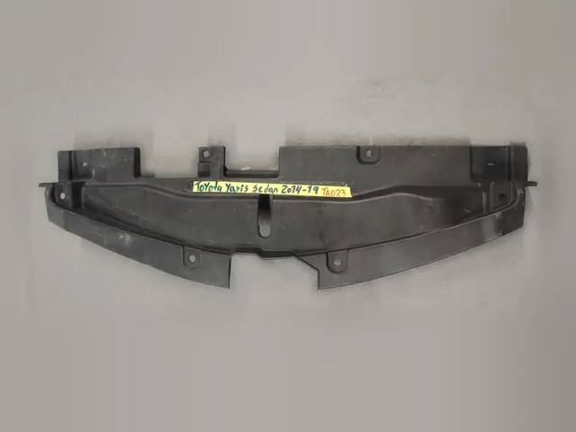
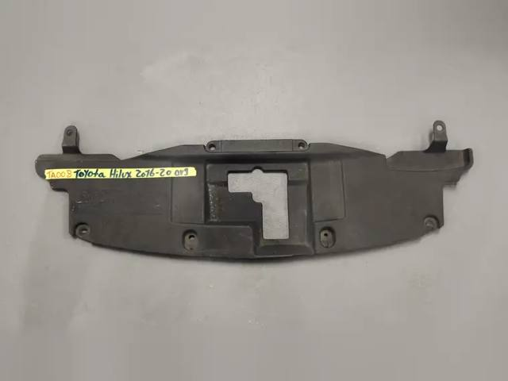
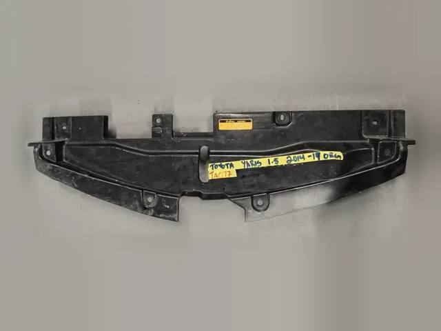
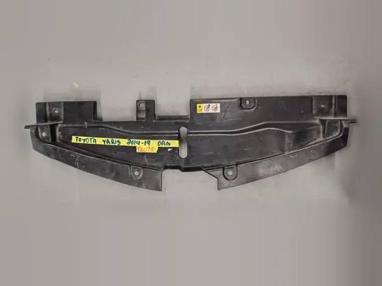
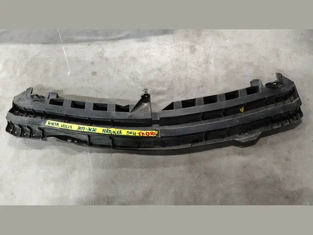
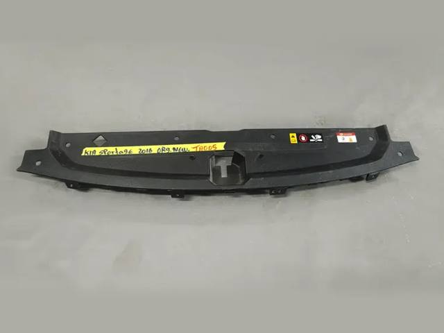
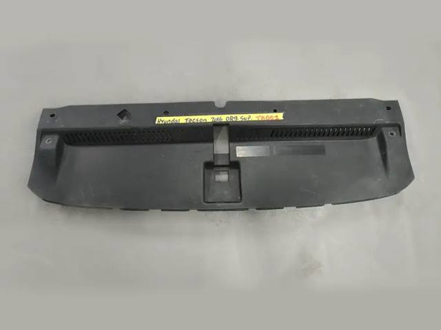
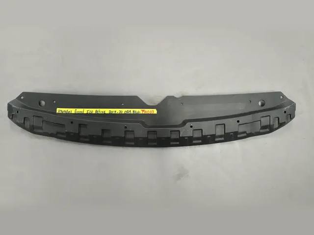
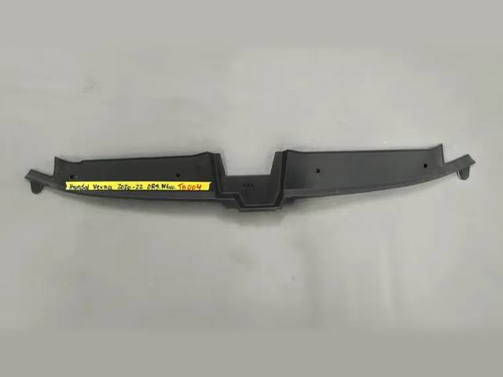
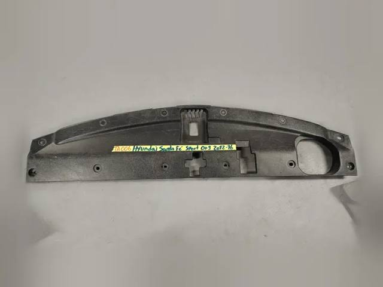

Tapas superiores de radiador en Panamá
49 disponibles hoy, originales y genéricas, cada una con su foto y su código. Elige la marca de tu carro:
- Garantía de 3 días
- Foto real de cada pieza
- Efectivo, Yappy o ACH
- Lunes a sábado, 8:00 a. m. a 5:00 p. m.
Tapas superiores de radiador para Toyota 15
 TA002Toyota Yaris 1.52014-19 · original
TA002Toyota Yaris 1.52014-19 · original
TA023Toyota Yaris Sedán2014-19 TA027Toyota RAV42013-18
TA027Toyota RAV42013-18 TA029Toyota Corolla2020-24 · original
TA029Toyota Corolla2020-24 · original TA031Toyota Yaris2014-19 · genérico
TA031Toyota Yaris2014-19 · genérico TA035Toyota RAV42016-18 · genérico
TA035Toyota RAV42016-18 · genérico TA038Toyota Yaris2018-20 · original
TA038Toyota Yaris2018-20 · original TA043Toyota RAV42016-18 · genérico
TA043Toyota RAV42016-18 · genérico
TA008Toyota Hilux2016-20 · original TA010Toyota Yarisoriginal
TA010Toyota Yarisoriginal TA016Toyota Land Cruiser2014-18 · original
TA016Toyota Land Cruiser2014-18 · original
TA017Toyota Yaris 1.52014-19 · original
TA018Toyota Yaris2014-19 · original TA048Toyota Corolla2020-22 · genérico nuevo
TA048Toyota Corolla2020-22 · genérico nuevo
TA050Toyota Hilux / Fortuner SW42017-20 · originalTapas superiores de radiador para KIA 10

TA005KIA Sportage2016 · original nuevo TA024KIA Sonet2020-24 · original
TA024KIA Sonet2020-24 · original TA025KIA Soluto2020-26 · original
TA025KIA Soluto2020-26 · original TA036KIA Rio2012-17 · original nuevo
TA036KIA Rio2012-17 · original nuevo TA009KIA Soluto2020-22 · original
TA009KIA Soluto2020-22 · original TA014KIA Sportage2010-16 · original
TA014KIA Sportage2010-16 · original TA015KIA Seltos2020-23 · original
TA015KIA Seltos2020-23 · original TA019KIA Rio2018-20 · original
TA019KIA Rio2018-20 · original TA020KIA Forte2017-18 · original nuevo
TA020KIA Forte2017-18 · original nuevo TA021KIA Soluto2023-26 · original
TA021KIA Soluto2023-26 · originalTapas superiores de radiador para Hyundai 9

TA001Hyundai Tucson2016 · original
TA003Hyundai Grand i10 Active2017-20 · original nuevo
TA004Hyundai Verna2020-22 · original nuevo TA033Hyundai Accent2020-22 · original
TA033Hyundai Accent2020-22 · original TA037Hyundai Verna2020-22 · original
TA037Hyundai Verna2020-22 · original TA039Hyundai Santa Fe2013-17 · original
TA039Hyundai Santa Fe2013-17 · original TA045Hyundai Tucson2016-21 · original
TA045Hyundai Tucson2016-21 · original
TA006Hyundai Santa Fe Sport2012-16 · original TA049Hyundai Accent2011 · genérico
TA049Hyundai Accent2011 · genéricoTapas superiores de radiador para Mazda 2
 TA030Mazda CX-5
TA030Mazda CX-5 TA032Mazda CX-5
TA032Mazda CX-5Tapas superiores de radiador para Mitsubishi 2
 TA007Mitsubishi Outlander Sport / ASX
TA007Mitsubishi Outlander Sport / ASX TA011Mitsubishi L200
TA011Mitsubishi L200Tapas superiores de radiador para Honda 1
 TA026Honda CR-V
TA026Honda CR-VTapas superiores de radiador para Dongfeng 1
Tapas superiores de radiador para Chevrolet 1
Tapas superiores de radiador para BYD 1
Tapas superiores de radiador para Chery 1
 TA041Chery Omoda C5
TA041Chery Omoda C5Tapas superiores de radiador para Lexus 1
Tapas superiores de radiador para Nissan 1
 TA044Nissan Kicks
TA044Nissan KicksTapas superiores de radiador para DFSK 1
Tapas superiores de radiador para Maxus 1
 TA047Maxus Deliver 9 RWD STD
TA047Maxus Deliver 9 RWD STDTapas superiores de radiador para Geely 1
Tapas superiores de radiador para Jeep 1
 TA022Jeep Compass
TA022Jeep CompassOtros tipos de pieza
Parrillas 339Faros y lámparas delanteras 263Defensas traseras 248Lámparas traseras 210Defensas delanteras 206Flares 184Covers de halógena 168Guardafangos 142Halógenas y faros antiniebla 114Puertas 99Cubrepolvos 92Refuerzos delanteros 78Capós 69Tapas de baúl 69Marcos de radiador 58Retrovisores 56Estribos y rolling boards 55Defensas traseras inferiores 55Defensas delanteras inferiores 54Vidrios 47Molduras de puerta 46Molduras traseras 33Refuerzos traseros 28Protectores inferiores 23Guardafangos traseros 22Copas 20Extensiones de defensa trasera 18Ventiladores 13Depósitos de agua 13Extensiones de defensa delantera 8Accesorios nuevos 5Molduras delanteras 4Soportes de defensa 2Discos de freno 1Covers de vagón (bedliner) 1